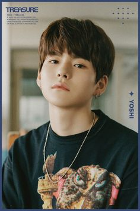

ANGGOTA DARI TREASURE
1. Choi Hyun Suk
Choi Hyun Suk adalah leader dari boyband ini, Ia ternyata masih berusia 23 tahun loh dan menjadi anggota tertua di TREASURE. Hyun Suk lahir pada tanggal 21 April 1999 di Daegu,Korea Selatan. Pria berzodiak taurus ini memiliki tinggi badan 171 cm, berat badan 58 kg dan Golongan darah A. Pada saat umur 8 tahun, Hyun Suk menonton film dokumenter BIGBANG The Beginning. Sejak itu lah Hyun Suk memiliki ketertarikan terhadap hiphop dan juga rap dan berharap bisa bergabung dalam industri musik Korea Dengan ketertarikan dan keseriusannya terhadap rap dan hip hop, Hyun Suk akhirnya menjadi anggota ke-7 yang diperkenalkan sebagai line up debut TREASURE. Tidak hanya berposisi menjadi leader, Hyun Suk juga adalah seorang rapper dan dancer di dalam grupnya. Sebagai leader, pastinya Hyun Suk memiliki idol KPop yang dijadikannya inspirasi seperti G Dragon (BIGBANG), Suga (BTS), Zico, Bobby (Ikon) dan Mino (Winner). Sebelum YG Treasure Box, ternyata Hyun Suk juga sudah pernah mengikuti program survival bentukan YG yang lain yaitu MIXNINE. Hyun Suk juga sempat masuk dalam daftar nama yang akan debut loh, tapi sayangnya grup tersebut batal debut karena kendala lainnya.
2. Park Ji Hoon
Mengingat member TREASURE ada 12 orang, maka Park Ji Hoon juga ditunjuk sebagai leader bersama Hyun Suk. Ji Hoon lahir pada 14 Maret 200 di Busan, Korea Selatan. Pria 22 tahun ini memiliki zodiak pisces dan tinggi badan 178 cm, berat badan 69 kg dan bergolongan darah B. Sebelum mengikuti Treasure Box, Ji Hoon menjadi trainee pada tahun 2016 dan muncul dalam acara Stray Kids Episode 6-7 sebagai perwakilan YG. Namun kemudian Ji Hoon sempat keluar dari YG dan bergabung dengan trainee di label AXIS yang didirikan SINXITY. Disaat YG ingin membuat acara treasure Box, Ji Hoon diberikan kesempatan kembali untuk bergabung menjadi peserta. Ji Hoon merupakan anggota ke 12 yang diumumkan dalam line up debut. Pada waktu itu Ji Hoon merupakan anggota yang masuk dalam line up debut di MAGNUM 6. Selain menjadi leader, Ji Hoon juga berperan sebagai dancer dan vokalis dalam grup nya.

3. Yoshi
Yoshi atau nama lengkapnya Kanemoto Yoshinori merupakan anggota TREASURE yang berasal dari Jepang. Pria 22 tahun ini nama Korea yaitu Kim Bang Jeon. Yoshi lahir pada tanggal 15 Mei 2000 di Kobe, Jepang. Ia berzodiak Taurus dengan tinggi badan 178 cm, berat badan 66 kg dan memiliki golongan darah B. Di dalam grup nya Yoshi berperan sebagai rapper. Selain itu juga ia memiliki keahlian dalam melakukan beatbox. Yoshi merupakan salah satu trainee yang tidak begitu menonjol pada saat Treasure Box, bahkan ia sempat tereliminasi pada saat membawakan lagu Boomerang dari WANNA ONE. Jika dibandingkan dengan Haruto dan Mashiho yang merupakan trainee asal Jepang, Yoshi kurang mendapat pujian dari sang produser.
4. Kim Junkyu
Kim Jun Kyu merupakan anggota TREASURE yang pertama kali diumumkan pada saat episode terakhir Treasure Box dan menjadi anggota member ke 4 TREASURE. Ia lahir pada 9 September 2000 di Chungju, Korea Selatan. Pria ini berzodiak virgo, dengan tinggi 178 cm, berat badan 65 kg dan Golongan darah O. Saat itu Jun Kyu berhasil mendapatkan voting tertinggi untuk posisi vokal dalam episode final Treasure Box. Sama dengan Choi Hyun Suk, ternyata Jun Kyu pernah mengikuti program survival MIXNINE namun tidak masuk dalam line up debutnya. Dengan ciri khas vokal yang unik, ternyata Jun Kyu dinilai memiliki suara yang menjadi “Style YG”. Selain memiliki vokal yang unik, Jun Kyu juga memiliki ketampanan yang tidak diragukan lagi sehingga ia dipilih menjadi visual di TREASURE A.
5. Yoon Jae Hyuk
Yoon Jae Hyuk merupakan member TREASURE yang lahir pada tanggal 23 Juli 2001 di Yongin, Korea Selatan. Sejak kecil pria yang berzodiak leo ini memang bercita-cita menjadi penyanyi. Ia memiliki postur tubuh dengan tinggi 178 cm dan berat badan 63 kg. Jae Hyuk memiliki golongan darah O. Dengan tekad yang bulat untuk menjadi idol, Jae Hyuk melakukan audisi di banyak agensi. Mulai dari SM, JYP, CUBE, Pledis, hingga Woollim dan Yuehua Entertainment. Beruntungnya, ia langsung ditawarkan menjadi idol di YG setelah melewati casting dan menjalani trainee hanya 6 bulan. Pada awal acara YG Treasure Box, Yoon Jae Hyuk tidak pernah mendapat pujian dari Yang Hyun Suk, bahkan ia sulit menyesuaikan diri dengan trainee yang lain ketika berlatih. Jae Hyuk juga sempat tereliminasi pada saat episode 9.
6. Asahi
Asahi memiliki nama lengkap Hamada Asahi, merupakan salah satu member TREASURE yang berasal dari Jepang. ia lahir pada tanggal 20 Agustus 2001 di Osaka, Jepang. Ia memiliki zodiak Leo dengan tinggi 172 cm, dengan berat badan 57 kg dan Golongan darah AB. Dalam grup Asahi berperan sebagai vokalis. Selama YG Treasure Box, Asahi tidak pernah masuk dalam tim TREASURE bahkan ia sempat tereliminasi. Akan tetapi YG memberikan kesempatan kedua bagi mereka yang dianggap memiliki potensi walaupun tidak masuk ke babak final, kemudian Asahi dipilih menjadi tim debut MAGNUM 6 setelah Yoshi. Asahi memang memiliki kemampuan dalam memproduksi lagu, lho, bahkan Asahi sudah menciptakan lagu semenjak ia duduk dibangku SMP. Tidak hanya memiliki bakat seni dalam menciptakan lagu, Asahi juga memiliki bakat dalam bidang melukis. Tidak jarang ia memperlihatkan lukisannya ke media sosial dan mendapatkan banyak pujian dari penggemarnya. Setelah menjadi member TREASURE ternyata Asahi juga merupakan fans boy dari boyband satu agensinya yaitu iKON.
7. Kim Doyoung
Kim Do Young merupakan member TREASURE yang berumur 18 tahun. Ia lahir pada tanggal 4 Desember 2003 di Seoul, Korea Selatan. Dia dikenal sebagai sosok yang hangat dan imut. Doyoung diketahui berasal dari keluarga yang memiliki ekonomi yang cukup tinggi Ia bahkan tinggal di kawasan elit di Gangnam Seoul. Pria ini berzodiak Sagitarius dengan tinggi badan 177cm, berat badan 58 kg dan golongan darah B. Dalam grup, ia menempati posisi sebagai dancer dan vokalis. Do Young merupakan anggota ke 10 yang diumumkan sebagai daftar nama debut TREASURE. Pada tahun 2015, tepatnya di umur 11 tahun, Doyoung sudah menjadi trainee di YG Entertainment. Sosoknya bahkan pernah muncul dalam program Stray Kids ‘JYP Vs YG’. Dalam acara YG Treasure Box, Kim Doyoung adalah anggota termuda di Tim A. Meskipun demikian, ia menerima pujian dari pelatih tari karena kemampuan menari yang luar biasa meskipun usianya masih muda. Pada saat itu Do Young diumumkan dalam tim MAGNUM 6 sebagai anggota ketiga.
8. Haruto
Selain Asahi dan Mashiho, Haruto juga merupakan salah satu member TREASURE yang berasal dari Jepang. Ia memiliki nama lengkap yaitu Watanabe Haruto. Haruto lahir pada tanggal 5 April 2004 di Fukuoka, Jepang. Pria berumur 18 tahun ini memiliki zodiak aries, tinggi badan 185 cm berat badan 65 kg dan golongan darah B. Ternyata, orang tua Haruto adalah penggemar KPop loh. Ibu nya merupakan penggemar berat dari grup jebolan YG juga yaitu BIGBANG dan 2NE1. Bahkan dengan kecintaan Ibunya terhadap BIGBANG, Haruto pernah memiliki rambut rumput laut seperti G Dragon. Haruto juga sering kali diajak oleh ibunya untuk menonton konser BIGBANG dan 2NE1 di Jepang. Semenjak itu lah Haruto memiliki ketertarikan dalam rap. Setelah ia duduk di bangku SMP saat usianya 12 tahun, ia mulai mengikuti audisi cabang YG Entertainment di Jepang. Di dalam grup Haruto berperan sebagai rapper. Dengan kemampuan yang diasah dari kecil, menjadikan Haruto rapper low tone yang penuh dengan karisma. Sehingga dalam seleksi terakhir, Haruto bisa menjadi satu-satunya anggota asal Jepang yang berhasil masuk dalam grup TREASURE 7.

9. Park Jeong Woo
Satu lagi member TREASURE yang masih memiliki umur yang cukup muda. Park Jeong Woo lahir pada tanggal 28 September 2004 DI Iksan, Korea Selatan. Saat ini ia masih berumur 17 tahun. Meskipun masih berumur 17 tahun, ia memiliki tinggi badan 180 cm loh dengan berat badan 65 kg dan golongan darah O.Jeong Woo juga memiliki zodiak Libra loh. jeong Woo sudah meninggalkan kesan yang mendalam sehingga ia mendapatkan julukan “vokal genius” dengan suara nya yang sangat jernih. Dengan bakat luar biasa yang ia miliki, ia berhasil lolos dari audisi YG dua hari setelah ia mendaftar di akademi vokal di IB Academy. Jeong Woo merupakan anggota ke -5 yang diumumkan masuk dalam grup TREASURE 7. Selain bakatnya yang tidak diragukan lagi, Jeong Woo juga memiliki pesona lainnya. Ia dikenal sebagai anak laki-laki yang memiliki sifat yang ceria dan suka bercanda. Ia bersama dengan Yoshinori dikenal sebagai member yang paling cerewet loh. Dengan usia yang masih muda, tidak sedikit para fans nya menantikan pertumbuhan Jeong Woo menjadi penyanyi lebih emosional dan unik.
10. So Jung Hwan
Jung hwan merupakan anggota termuda di TREASURE. ia lahir pada tanggal 18 Februari 2005 di Iksan, Korea Selatan. Saat ini usianya masih 17 tahun. Ia memiliki zodiak Aquarius, tinggi badan 179 cm, berat badan 67 kg dan golongan darah B. Ternyata Jung Hwan juga sudah terbiasa di depan kamera dari ia kecil loh. Ia sudah menjadi model cilik dan pernah berperan dalam mini drama, selain berada didepan kamera ia juga bergabung dalam grup taekwondo bahkan memiliki sabuk hitam. Dalam grupnya Jung Hwan menjadi dancer dan visual. Semenjak program acara Treasure Box, Jung Hwan sudah memperlihatkan kemampuan menarinya, ia bahkan sering dipuji karena menari dengan ekspresi wajah yang sangat baik. Meski sempat tereliminasi, pada pengumuman terakhir Jung Hwan berhasil menjadi salah satu nama yang ada dalam grup TREASURE 7.